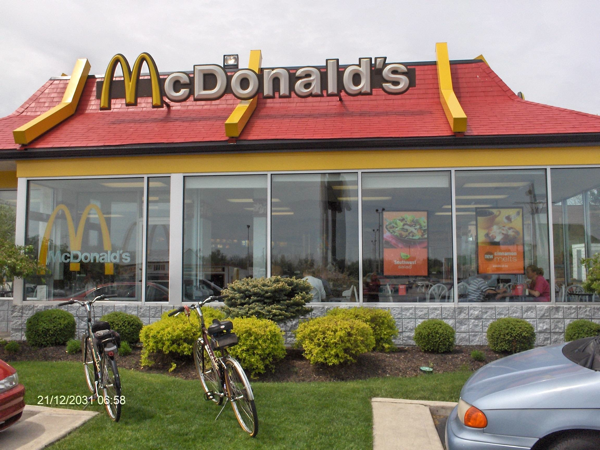

Apparently McDonald’s own Wifi network for customers is more popular then a Big Mac. Hard to believe.
750K customers have logged into the network since they introduced it in 2007. Thats a tenfold increase from what they first offered. What is means for the company is that they have customers who buy coffee and spend money. Not a bad combination.